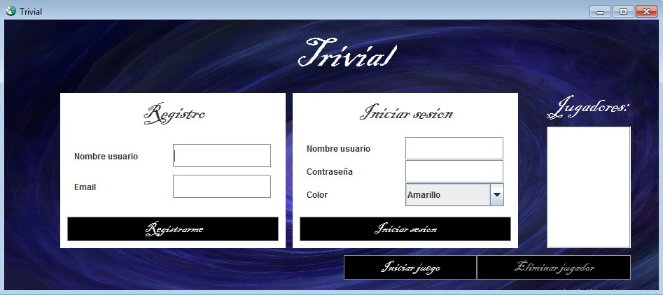
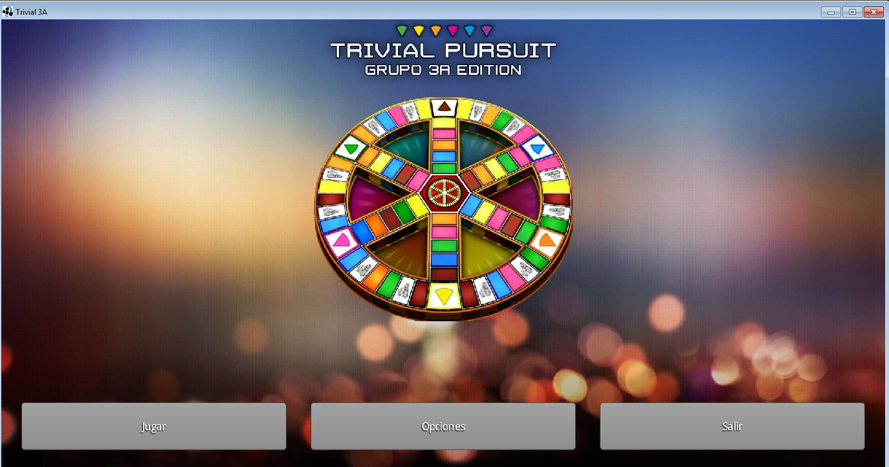
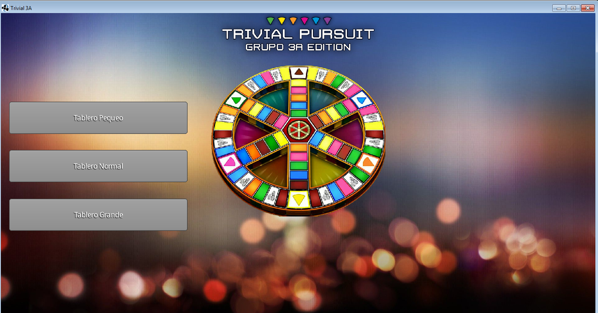
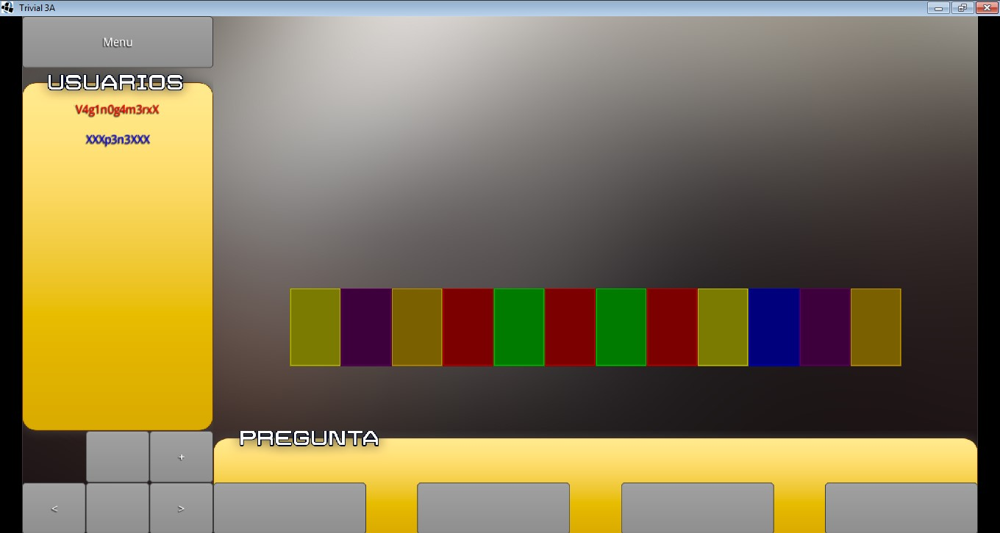
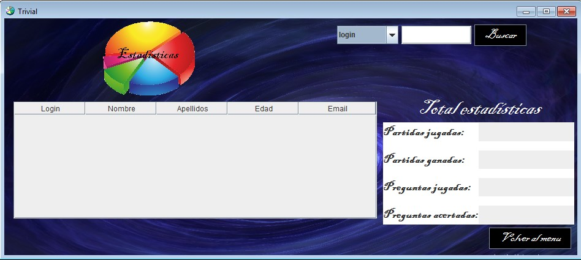

Descripción del funcionamiento de la interfaz que será utilizada por un usuario administrador o un usuario cliente, éste usuario podrá registrarse en la aplicación, validarse para poder participar en una partida de trivial y consultar sus estadísticas de las partidas ganadas, preguntas acertadas, etc…
Instalación de la aplicación
Debemos descargarnos el archivo .apk que contiene el juego.
Haremos doble click sobre el archivo y se iniciará automáticamente.
Descargar la base de datos mongodb de su página oficial.
Instalarla y abrirla para poder jugar.
Usuario cliente
La primera pantalla que se encontrará el usuario al iniciar el juego será esta:
En ella, tenemos dos alternativas.
1. Registrarnos como nuevo jugador. Se introducirán el nombre y email y se pulsará el botón de “registrarme”. A continuación se nos abrirá una nueva ventana en la que se nos pedirá que introduzcamos otros datos para completar el registro.
2. Iniciar sesión. Para poder jugar una partida, hace falta iniciar sesión, para ello se nos pedirá que introduzcamos nombre, contraseña y el color que queremos tener. Podrán iniciar sesión varios jugadores a la vez, todos estos, serán los que participarán en juego. Al iniciar sesión dos jugadores no pueden elegir el mismo color.
Para comenzar a jugar, es necesario que inicie sesión al menos un jugador y darle al botón de “iniciar juego”.
Una vez iniciado el juego, nos aparecerá la siguiente ventana:
Si pulsamos sobre el botón de jugar, nos aparecerán tres opciones de tableros que podemos elegir: el tablero pequeño, normal o grande.
Seleccionamos el tablero que queramos, y nos aparecerá la ventana del juego:
En esta ventana, tiraremos el dado pulsando sobre el botón con el “+”, nos aparecerá a su izquierda el resultado, elegiremos donde queremos movernos con las flechas y nos aparecerá una pregunta con cuatro posibles respuestas. Si acertamos se nos añadirá un quesito, si no, jugará otro jugador en caso de partidas multijugador. Cuando tengamos los quesitos de todos los colores, finalizará el juego indicando que hemos ganado.
Usuario administrador
El usuario administrador, deberá iniciar sesión en la ventana principal, para ello, introducirá su nombre de usuario y contraseña.
Una vez introducidos los datos, se nos abrirá una nueva ventana:
En esta ventana podemos ver todas las estadísticas de los jugadores, partidas jugadas, ganadas, preguntas contestadas, preguntadas acertadas… Además podremos buscar un jugador en concreto filtrando su búsqueda por nombre, por login, por apellidos, etc.